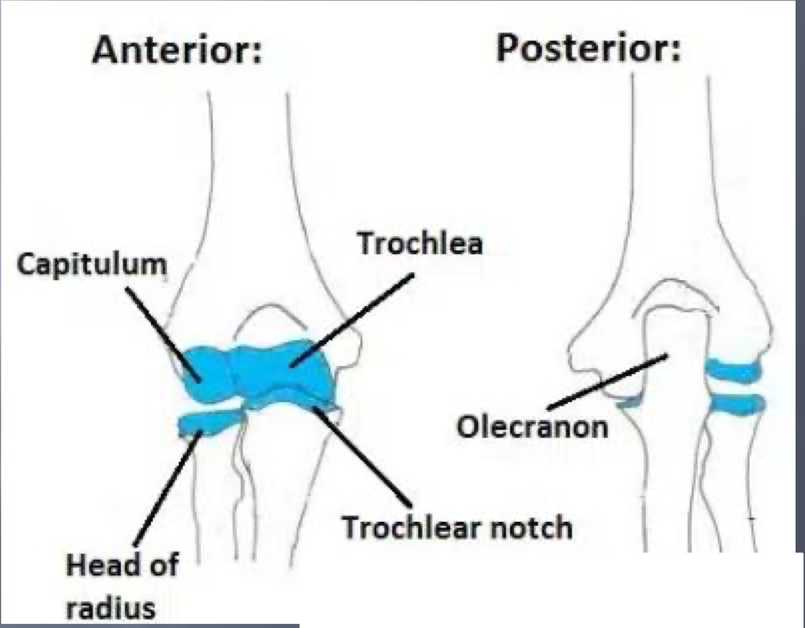
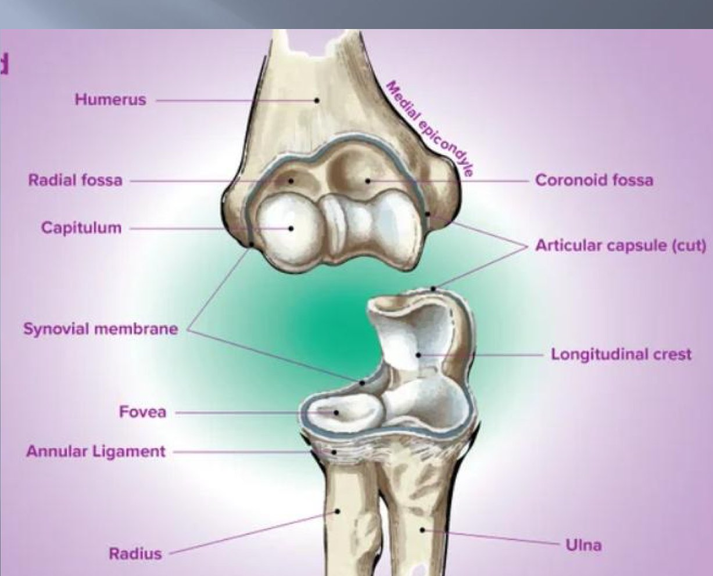
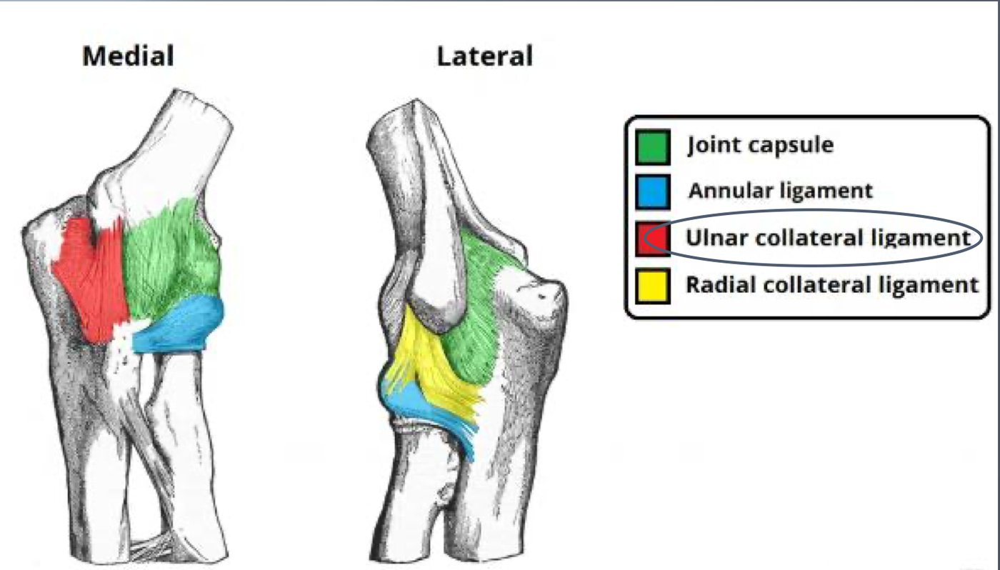

S1 · Anatomy · Summary
Elbow joint
- Essentials
- 3 joints
- Articular surfaces
- Annular ligament
- Capsule
- Ligaments
- Synovium & bursae
- Movements
- Surface anatomy
- Exam traps
- Self-check
If you remember only this
- Elbow = 3 diarthroses sharing one cavity, one synovial membrane, one ligament apparatus: humero-ulnar (trochlear: flexion/extension), proximal radio-ulnar (trochoid: pronation/supination), humero-radial (enarthrosis/ball-and-socket).
- Humerus: trochlea (medial pulley; coronoid fossa in front, olecranon fossa behind), capitulum (spheroid segment, lateral and distal; radial fossa above), capitulo-trochlear groove.
- Ulna: trochlear notch (posterior vertical facet = olecranon, anterior horizontal facet = coronoid) + radial notch on the outer face of the coronoid.
- Annular ligament: fibrocartilaginous band 1 cm high from the anterior to the posterior border of the radial notch; inner face covered with cartilage (articular), outer face fibrous.
- The only ligament attached to the radius (neck) = quadrate ligament (of Denucé), from the lower border of the radial notch.
- Flexion 140–160°, extension 0°, supination 85°, pronation 70°. Landmarks: Nélaton's triangle in flexion, Malgaigne's line in extension.
I. Definition — three joints in one p. 1 slides p. 5–7
The elbow is a complex joint connecting the humerus and the two forearm bones (radius, ulna). It has 3 diarthroses:
| Joint | Type | Role |
|---|---|---|
| Humero-ulnar | Trochlear | Flexion and extension of the forearm on the arm |
| Proximal radio-ulnar | Trochoid | Pronation and supination |
| Humero-radial | Enarthrosis (ball-and-socket) | Takes part in the movements of the other two |
They are essentially one joint: a single cavity, a single synovial membrane, a single ligament apparatus.
II. Articular surfaces p. 1–2 slides p. 9–18 2025-26
| Bone | Surface | Description |
|---|---|---|
| Distal humerus | Trochlea | Segment of a pulley (2 slopes + a groove); topped by the coronoid fossa in front and the olecranon fossa behind |
| Capitulum 🎯 | Segment of a spheroid, on the lateral and distal part of the humerus; the radial fossa lies in front of and above it | |
| Capitulo-trochlear groove | Between capitulum and trochlea (conoid zone) | |
| Proximal ulna | Trochlear notch | Hook fitting on the trochlea; 2 cartilage-covered facets separated by a transverse groove: posterior, vertical = anterior face of the olecranon; anterior, horizontal = superior face of the coronoid process |
| Radial notch | On the outer face of the coronoid process; a hollow cylinder segment; → periphery of the radial head | |
| Radial head | Articular fovea (superior) | Excavated → capitulum; its rim, bevelled on the inner part, → capitulo-trochlear groove |
| Articular circumference | Around the head, cartilage continuous with the fovea's; held in an osteofibrous ring = radial notch + annular ligament |


Annular ligament p. 2 slides p. 19–20 2023-24
- Fibrocartilaginous band, 1 cm high: an articular surface by its deep face and a passive ligament by its superficial face.
- Runs from the anterior border to the posterior border of the radial notch of the ulna, wrapping around the radial head.
- Inner (articular) face: against the radial head circumference, covered with articular cartilage.
- Outer face: fibrous, adheres to the capsule.
III.1 Joint capsule p. 2 slides p. 22–24
Fibrous sleeve joining the 3 bone ends, inserted around the articular surfaces; its deep face is lined by the synovial membrane.
| Where | Insertion |
|---|---|
| Humerus, above | Upper border of the coronoid and radial fossae in front, of the olecranon fossa behind |
| Laterally | Lower borders of the medial and lateral epicondyles |
| Ulna, below | Edges of the notches, near the cartilage |
| Radius, below | Neck of the radius, half a centimetre below the radial head |
III.2 Ligaments p. 2–3 slides p. 26–38 2023-24
The notes count 6 ligaments (anterior, posterior, ulnar collateral, radial collateral, quadrate, annular); the slides say 5.
| Ligament | Bundles / attachments |
|---|---|
| Anterior | Poorly defined, over the whole front of the capsule. Anterior oblique bundle: upper border of the coronoid fossa → upper border of the coronoid process |
| Posterior | 3 bundles: oblique humero-olecranon (lateral edges of the olecranon fossa → apex of the olecranon); horizontal humero-humeral (edge to edge of the olecranon fossa, transverse band); vertical humero-olecranon (upper olecranon fossa → apex of the olecranon) |
| Ulnar collateral | From the medial epicondyle: anterior bundle → coronoid process; middle bundle (thick, wide) → coronoid process; posterior bundle (Bardinet, fan-shaped) → olecranon. Arcuate bundle (Cooper): transverse, coronoid process → base of the olecranon |
| Radial collateral | From the lateral epicondyle: anterior bundle → radial notch; middle bundle → ulna behind the radial notch; posterior bundle → lateral border of the olecranon |
| Inferior = quadrate ligament (of Denucé) 🎯 | Quadrilateral plate from the lower border of the radial notch to the medial part of the neck of the radius |
| Annular | See above |

Which one reaches the radius?
Both collateral ligaments end on the ulna (coronoid, olecranon, radial notch). Only the quadrate ligament attaches to the radius (its
neck); the annular ligament surrounds the radial head without inserting on it.
IV–V. Synovium and bursae p. 3 slides p. 40–42, 53
- Synovium lines the inner face of the capsule, secretes synovial fluid, reflects onto the bone ends and stops where cartilage begins, forming 3 recesses: anterior (coronoid and radial fossae), posterior (olecranon fossa), inferior/annular (around the radial neck).
- Bursae reduce friction between soft tissues and bony prominences — e.g. the olecranon bursa.
VI. Functional anatomy p. 3 slides p. 44–47 2023-24
| Movement | Where | Definition | Range |
|---|---|---|---|
| Flexion | Humero-antebrachial joint | Forearm forward | 140°–160° |
| Extension | Forearm backward | 0° | |
| Supination | Humero-radial + proximal and distal radio-ulnar joints; rotation around a vertical axis (the radius moves) | Forearm outward, palm up | 85° |
| Pronation | Forearm inward, palm down | 70° |
Memory trick
Supination = holding a bowl of soup (palm up) — and it is the bigger one (85° > 70°).
VII. Surface (palpatory) anatomy p. 3 slides p. 49–51 2025-26
3 palpable bony landmarks at the back: lateral epicondyle (lateral), olecranon (middle), medial epicondyle (medial).
Exam traps
False statements to recognise
- The inner face of the annular ligament "is purely fibrous" — false: it is covered with cartilage (the outer face is fibrous). 2023-24
- "The ulnar / radial collateral, oblique or posterior ligament attaches to the radius" — false: only the quadrate ligament. 2023-24
- "Pronation 85°", "supination 80°", "circumduction" — false: pronation 70°, supination 85°; circumduction is not listed among the elbow's movements. 2023-24
- The capitulum "occupies the coronoid process / the radial head", is "medial" or "proximal" — false: lateral and distal humerus. 2025-26
- "Malgaigne line in flexion", "Malgaigne / Nélaton triangle in extension" — false: Nélaton triangle in flexion, Malgaigne line in extension. 2025-26
Self-check
Name the 3 joints of the elbow with their type.
Humero-ulnar (trochlear), proximal radio-ulnar (trochoid), humero-radial (enarthrosis).
Why are they considered one joint?
One cavity, one synovial membrane, one ligament apparatus.
Which fossae sit above the trochlea and above the capitulum?
Trochlea: coronoid fossa (front), olecranon fossa (back). Capitulum: radial fossa (front, above).
Describe the two facets of the trochlear notch.
Posterior vertical (anterior face of the olecranon) and anterior horizontal (superior face of the coronoid), separated by a transverse groove.
Where is the radial notch and what does it articulate with?
Outer face of the coronoid process; the circumference of the radial head.
What do the fovea and the circumference of the radial head articulate with?
Fovea → capitulum (rim → capitulo-trochlear groove). Circumference → radial notch and annular ligament.
Describe the annular ligament.
Fibrocartilaginous band 1 cm high, anterior → posterior border of the radial notch around the radial head; inner face cartilaginous (articular), outer
fibrous.
Where does the capsule insert on the radius?
On the neck, half a centimetre below the radial head.
What are the Bardinet and Cooper bundles?
Bardinet: fan-shaped posterior bundle of the ulnar collateral ligament (medial epicondyle → olecranon). Cooper: arcuate transverse bundle, coronoid →
base of the olecranon.
Describe the quadrate ligament.
Quadrilateral plate from the lower border of the radial notch to the medial part of the radial neck.
Name the 3 synovial recesses.
Anterior (coronoid and radial fossae), posterior (olecranon fossa), inferior/annular (around the radial neck).
Ranges of flexion, extension, supination, pronation?
140–160°, 0°, 85°, 70°.
Nélaton vs Malgaigne?
Nélaton triangle: the 3 posterior landmarks in flexion. Malgaigne line: the same landmarks aligned in extension.